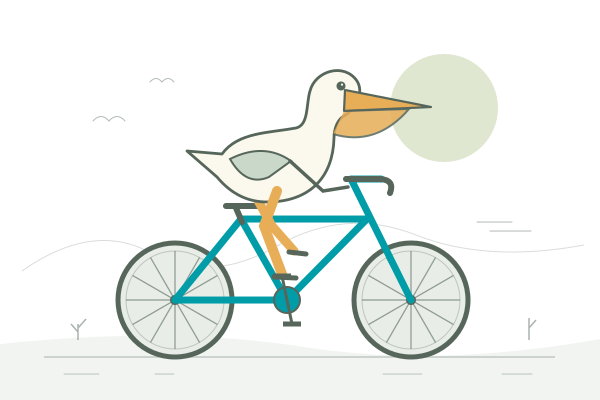

One prompt. Many possibilities.
Pelican, meet
the bicycle.同一道题，不同的想象。
把一只鹈鹕交给 AI，再给它一辆自行车。
用完全相同的提示词，观察不同模型如何把想象
变成一个会动的 HTML 页面。

作品陈列室
先看画面，再看它如何运转。
正在读取作品…选取 2–4 个作品，放在一起看
目前尚无正式参测结果。以下为站点功能演示，不计入模型测试，也不提供虚构评分。
“页面是一幅原创、精致且有动感的插画式小场景：一只鹈鹕正在骑自行车前进。”